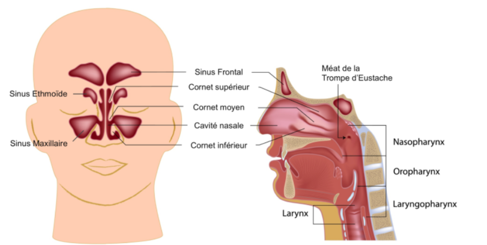
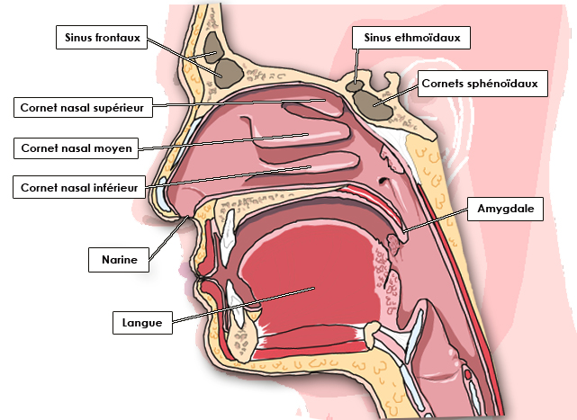
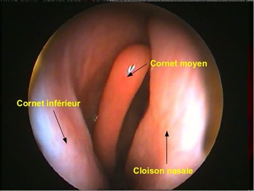
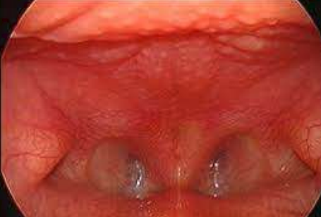
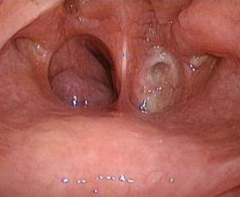
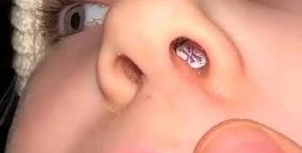
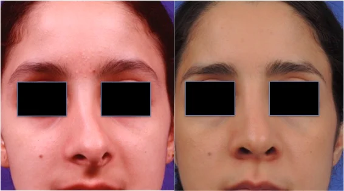
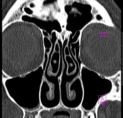

De la démarche diagnostique au traitement étiologique, en fonction de l’âge.
Mohammed W. Hammami
Sarra N. Ernez
Rana Amaidia
Mouadh Belgasmi
Oumaima Taalouch
Ons Haboubi
Service d’ORL, CHU Farhat Hached, Sousse
01
Introduction
L’obstruction nasale est un motif fréquent de consultation en ORL, chez l’enfant comme chez l’adulte. C’est un symptôme — un trouble de la perméabilité nasale — et non une maladie en soi.
Manifestations
Sensation de nez bouché
Difficulté à respirer par le nez
Causes possibles
Cause anatomique ou architecturale
Cause muqueuse ou inflammatoire
Cause tumorale, bénigne ou maligne
Toute obstruction nasale impose une démarche diagnostique structurée avant tout traitement.
02
Rappel anatomique
Vue coronale
Illustration anatomiqueassets/anatomie_01.png

Fig. 01Vue coronale : sinus, cornets et fosse nasale.
Les structures de la filière nasale
Cornet nasal supérieur, moyen et inférieur — en regard de la paroi latérale
Sinus frontal et cellules ethmoïdales à l’étage supérieur
Sinus maxillaire de part et d’autre des fosses nasales
Fosse nasale proprement dite, cloison médiane
Voies naso-lacrymales (sac et canal) en regard de l’ethmoïde
02
Rappel anatomique
Vue sagittale
Du nez au rhinopharynx
Sinus frontal, bulbe olfactif et lame criblée au toit
Os propre du nez et cartilage formant la voûte
Cornet supérieur, moyen et inférieur sur la paroi latérale
Sinus sphénoïdal en arrière, sous la sella
Orifice de la trompe d’Eustache au niveau du rhinopharynx
Les meâts nasaux assurent la communication et le drainage des sinus vers les fosses nasales.
Illustration anatomiqueassets/anatomie_02.png

Fig. 02Vue sagittale : cornets, sinus et trompe d’Eustache.
02
Rappel anatomique
Aspect endoscopique
Photographie endoscopiqueassets/anatomie_03.png

Fig. 03Endoscopie : cornet inférieur et cloison nasale.
À l’endoscopie, la filière nasale repose sur deux repères constants.
Le cornet inférieur, structure de la paroi latérale
La cloison nasale, paroi médiane osteo-cartilagineuse
Ces repères guident l’exploration endoscopique systématique des fosses nasales.
03
Physiologie des fosses nasales
I.
Respiration
Les fosses nasales constituent la voie respiratoire supérieure.
II.
Conditionnement de l’air
La muqueuse nasale assure l’humidification, le réchauffement et l’adaptation de l’air inspiré.
III.
Épuration
Mucus et cellules ciliées assurent ensemble la filtration et l’élimination des particules.
Innervation
La sensibilité générale dépend du nerf trijumeau. L’innervation neurovégétative associe le système sympathique (vasoconstriction) et parasympathique (vasodilatation, augmentation de la sécrétion).
03
Physiologie
Retentissement de l’obstruction
Obstruction nasale
diminution du calibre de la filière nasale
→
Respiration buccale
contournement de la voie nasale
→
Air moins conditionné
perte d’humidification et de réchauffement
→
Sécheresse & irritation
pharyngo-laryngée, gorge sèche ou irritée, surtout le matin
Obstruction bilatérale
Obstruction unilatérale
Diminution du calibre des deux fosses nasales → gêne respiratoire plus importante
Diminution du calibre d’une seule fosse nasale → gêne généralement moins importante
04
Démarche diagnostique
A. Interrogatoire
Terrain & antécédents
Terrain : âge, habitudes, profession
Antécédents personnels ou familiaux : asthme, allergie, chirurgie, trauma
Environnement : saison, climat, pollution, habitat (humidité, literie, animaux), exposition à des irritants chimiques
Retentissement : sommeil, niveau scolaire, rendement professionnel, sport
Syndrome d’hyperréactivité nasale
Association caractéristique : obstruction nasale + rhinorrhée + éternuements.
04
Démarche diagnostique
A. Examen physique
Inspection
De la face et de la pyramide nasale : déformation, nez dévié ou enfoncé, collapsus de la valve nasale à l’inspiration ; écchymose, plaie en cas de traumatisme.
Rhinoscopie antérieure
Au spéculum nasal : muqueuse, cloison, cornets, méats, contenu des fosses nasales.
Endoscopie nasale
Optique rigide ou nasofibroscopie, après rétraction de la muqueuse : exploration détaillée des fosses nasales et des sinus.
Bombement rénitent de la cloison → hématome septal = urgence
Palpation : douleur → traumatisme / inflammation ; mobilité anormale → origine traumatique ; douleur des points sinusiens → sinusite.
04
Démarche diagnostique
B. Examens complémentaires
Confirmer l’obstruction
Rhinomanométrie : mesure simultanée du débit et des variations de pression du courant aérien (antérieure par voie nasale, postérieure par voie buccale)
Rhinométrie acoustique : réflexion d’une impulsion acoustique — calibre et géométrie des fosses nasales
Rechercher l’étiologie
Tests cutanés et IgE spécifiques si rhinite allergique suspectée
TDM : technique principale d’exploration des cavités naso-sinusiennes — cause tumorale ou architecturale
IRM : intéressante dans la pathologie tumorale
Cytologie nasale (frottis ou lavage) : la muqueuse nasale normale ne contient pas de polynucléaires éosinophiles. — Explorations immunoallergiques : prick-test, IgE sériques totales (peu spécifiques) et spécifiques (diagnostic d’allergie).
05
Diagnostic & traitement étiologique
L’étiologie d’une obstruction nasale se lit d’abord à travers l’âge du patient.
A.
Nourrisson & nouveau-né
Atrésie choanale — rhinite inflammatoire
B.
Enfant
Corps étranger intranasal — hypertrophie des végétations adenoïdes
Imperforation choanale, membraneuse ou osseuse, se manifestant dès la naissance. Deux tableaux cliniques selon la latéralité.
Atrésie bilatérale
Atrésie unilatérale
Urgence thérapeutique : détresse respiratoire aiguë du nouveau-né
Tableau moins bruyant et moins sévère, souvent découvert plus tardivement
Diagnostic confirmé par l’endoscopie nasale ; la prise en charge est chirurgicale (perforation de la cloison choanale).
Endoscopieassets/atresie_01.png

Fig. 04Atrésie choanale bilatérale.
Endoscopieassets/atresie_02.png

Fig. 05Atrésie choanale unilatérale gauche.
05 A
Rhinite inflammatoire du nourrisson
Nourrisson & nouveau-né
C’est la cause la plus fréquente d’obstruction nasale chez le nourrisson.
Tableau clinique
Donne le même tableau clinique que l’atrésie choanale
Obstruction nasale, gêne respiratoire, troubles de l’alimentation
Rhinoscopie antérieure
Hypertrophie des cornets, plaqués contre la cloison
Obstruction de la filière nasale en regard
L’évocation devant un nourrisson obstrué : éliminer une atrésie choanale (bilatérale = urgence), puis retenir la rhinite inflammatoire, cause la plus fréquente.
05 B
Corps étranger intranasal
Enfant
Photographie cliniqueassets/corps_etranger_01.png

Fig. 06Corps étranger intranasal chez l’enfant.
Passe souvent inaperçu des parents
Rhinorrhée fétide unilatérale, parfois purulente ou sanglante, qui ne cède pas au traitement médical
Pousser l’interrogatoire à la recherche d’une notion de corps étranger
Rhinoscopie antérieure après nettoyage des fosses nasales (lavage, aspiration) : met en évidence le corps étranger
Traitement
Extraction du corps étranger, parfois sous anesthésie générale selon le siège et la nature de l’objet.
05 B
Hypertrophie des végétations adenoïdes
Enfant
Symptômes
Obstruction nasale, respiration buccale
Ronflement et troubles respiratoires du sommeil
Hypoacousie / otite séromuqueuse : dysfonctionnement de la trompe d’Eustache
Fig. 08L’écartement des narines empêche la fermeture de la valve à l’inspiration.
Obstruction inspiratoire avec collapsus de la paroi latérale nasale à l’inspiration
Pression négative inspiratoire
↓
Instabilité / collapsus de la valve
↓
Obstruction nasale inspiratoire
Traitement
Mesures mécaniques chez certains patients ; chirurgie en cas d’insuffisance structurelle symptomatique.
05 C · 1
Anomalie du septum nasal
Anomalies architecturales
Schémaassets/septum_01.png

Fig. 09Déviation septale : avant et après correction.
Étiologies : post-traumatiques, développementales ou congénitales
Obstruction nasale unilatérale ou bilatérale, gêne respiratoire chronique
Peut entraîner une sinusite chronique par confinement
Traitement
Septoplastie (correction fonctionnelle du septum) ; rhinoseptoplastie si déformation externe associée.
05 C · 1
Concha bullosa
Anomalies architecturales
TDM des sinusassets/concha_bullosa_01.png

Fig. 10Pneumatisation du cornet moyen à la TDM.
Pneumatisation du cornet nasal moyen
Souvent asymptomatique
Diagnostic : TDM des sinus
Conduite à tenir
La présence d’une concha bullosa n’est pas en soi une indication opératoire. Si volumineuse, elle induit une obstruction nasale et indique la chirurgie (turbinectomie ou turbinoplastie, par voie endonasale).
05 C · 1
Rhinites hypertrophiques congestives
Anomalies architecturales
Sémiologie
Congestion de la muqueuse des cornets inférieurs
Cornets inférieurs rouges vifs et hypertrophiques, mais mous
Ils se rétractent bien sous l’effet de la xylocaïne
Rechercher systématiquement une étiologie (rhinite allergique associée notamment)
Traitement
Médical : corticothérapie locale, lavages d’eau de mer
Chirurgical en cas d’échec : réduction des cornets inférieurs (turbinoplastie ou turbinectomie)
L’épanchement muqueux congestif est réversible : la chirurgie n’intervient qu’apr’échec du traitement médical bien conduit.
05 C · 2
Rhinosinusites infectieuses
Pathologies muqueuses
Étiologies
Évolution
Bactériennes — virales — mycosiques
Aiguës ou chroniques (> 3 mois)
Tableau clinique
Obstruction nasale + rhinorrhée purulente
Céphalées accentuées en position penchée en avant
Endoscopie nasale
Pus au niveau des méats — argument diagnostique direct
Permet le prélèvement bactériologique en cas de forme chronique
05 C · 2
Rhinites chroniques
Pathologies muqueuses
Atteintes non mécaniques des structures nasales, présentes au moins 12 semaines par an, consécutives ou non.
Rhinite allergique
Cause la plus fréquente : 50 % des rhinites chroniques
Polype de Kilian : polype translucide unilatéral en bissac
Fibrome nasopharyngien : masse du rhinopharynx chez l’adolescent, très vascularisée
Hypertrophie adénoïde : obstruction du rhinopharynx chez l’enfant
07
Conclusion
L’obstruction nasale est un motif de consultation fréquent en ORL, chez l’enfant comme chez l’adulte
C’est un symptôme qui impose une démarche diagnostique précise pour aboutir à un diagnostic étiologique
L’étiologie se lit d’abord en fonction de l’âge : nourrisson, enfant, adulte
Bien que les causes muqueuses soient les plus fréquentes, l’endoscopie des fosses nasales et du cavum doit être systématique pour éliminer une cause organique, en premier lieu tumorale